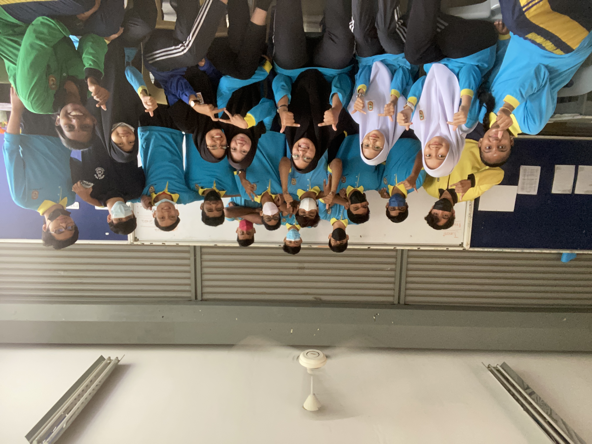
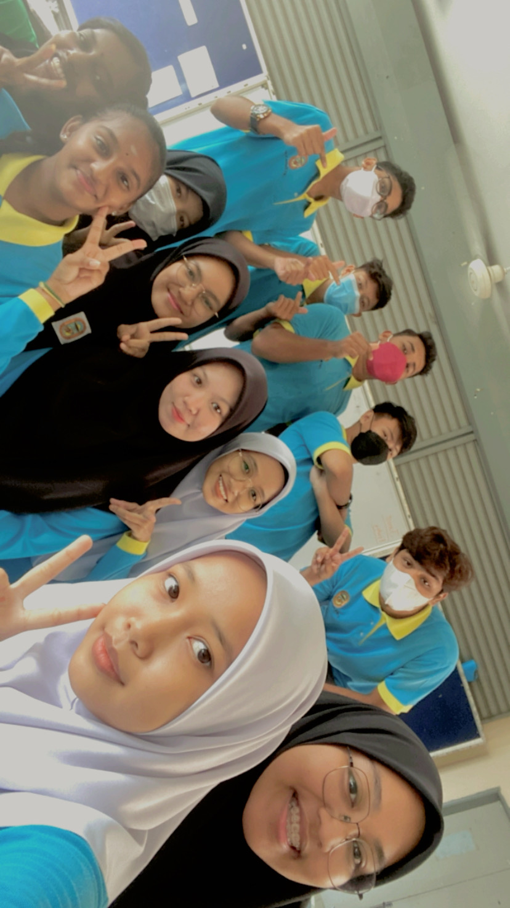
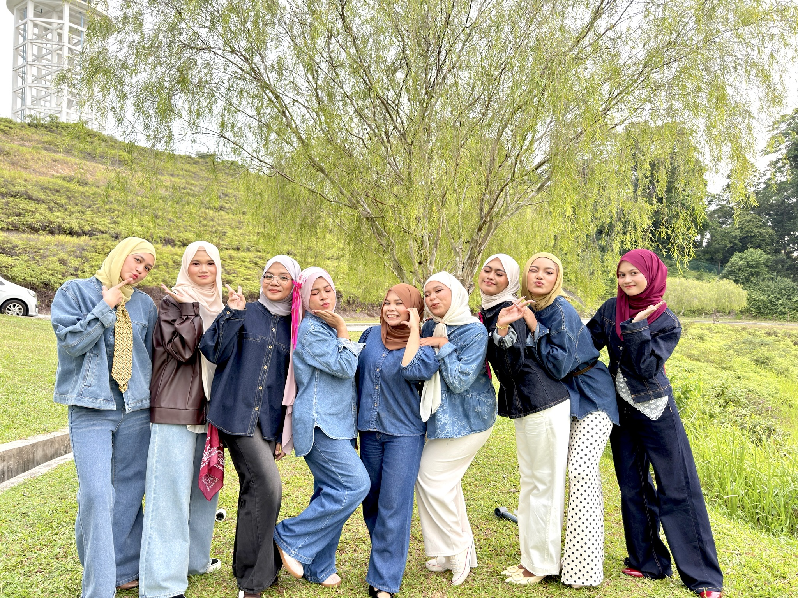
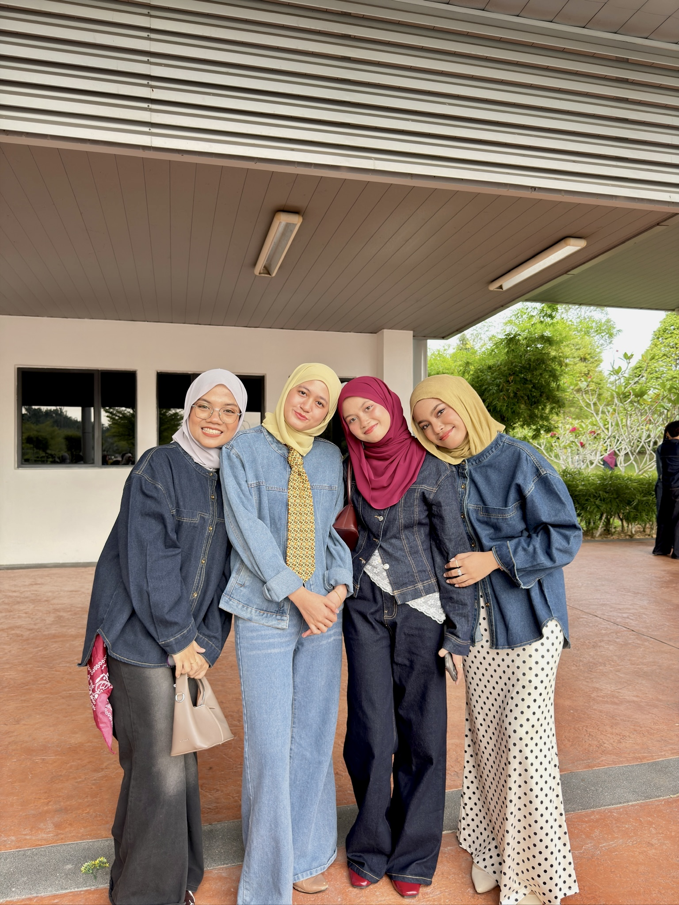

About Me


Hi Babes! My name is Irdina Batrisya Jamaludin, but you can call me Deena. I’m currently a final semester student of Information Management at UiTM Rembau. I was born and raised in Pulau Pinang. I’m the eldest of four siblings and the only princess besides my mom. In my free time, I enjoy cooking, listening to podcasts, and watching Netflix. My comfort food has always been chicken buttermilk because it’s one of my favourite dishes. I also love spending time with my family and creating precious memories with the people I care about.
Education
High School Era


My SPM era was a crazy yet memorable journey. It was a time when we enjoyed every moment without worrying too much about the future. I’m truly grateful to have them as my friends because they supported me and helped me through the ups and downs during my SPM season. I will always cherish these memories and I’m definitely going to miss them so much.
Diploma Journey


When I entered my diploma life, I thought everything would be easy, but I was wrong. Along the way, I faced many challenges and learned so many new things. Despite the ups and downs, I still enjoy every moment of this journey. I’m truly grateful to have amazing friends who have been by my side and made my diploma life more meaningful. These memories will always be special to me.
Work Experiences
- Accurately took customer orders and processed payments.
- Prepared food and beverages according to company standards.
- Maintained cleanliness and safety in the kitchen and service area.
- Assisted team members during peak hours for smooth operations.
- Provided friendly and prompt customer service.
- Served food and beverages in a professional manner.
- Ensured cleanliness and organization of the dining area.
- Supported daily café operations and table arrangements.
Contact Me
For any inquiries, do connect with me🌸